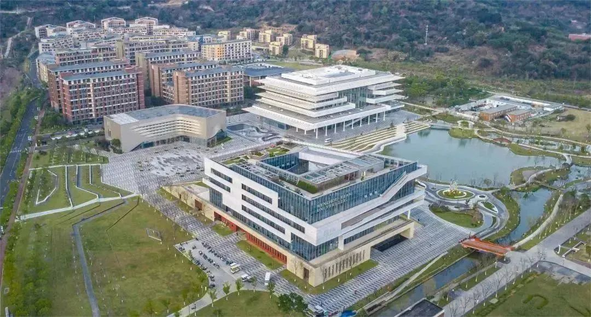
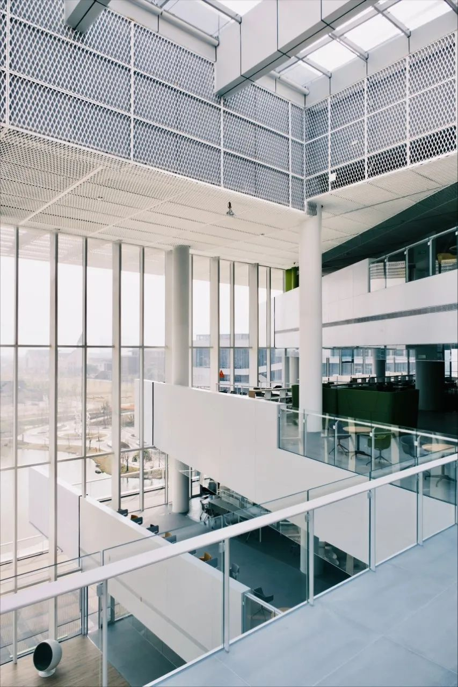
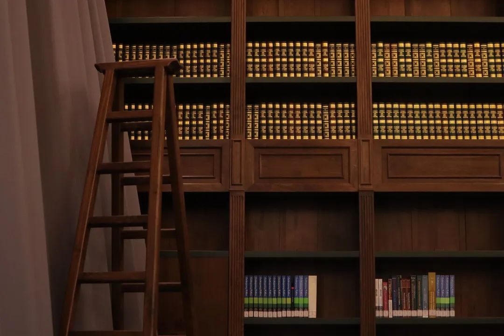

The total construction area of the Student Learning and Activity Center is about 24,000 square meters, with six floors above ground and one floor underground. It consists of three parts: the Student Activity Center, the Learning Center, and the Information Center. The main function of the floors below the third floor is the Student Activity Center, and the main function of the floors above the third floor is the Learning Center. The interactive space between the Activity Center and the Learning Center, which promotes communication, is spread out around the atrium, forming a "public hall" that represents university life.
Exterior
interior
Library